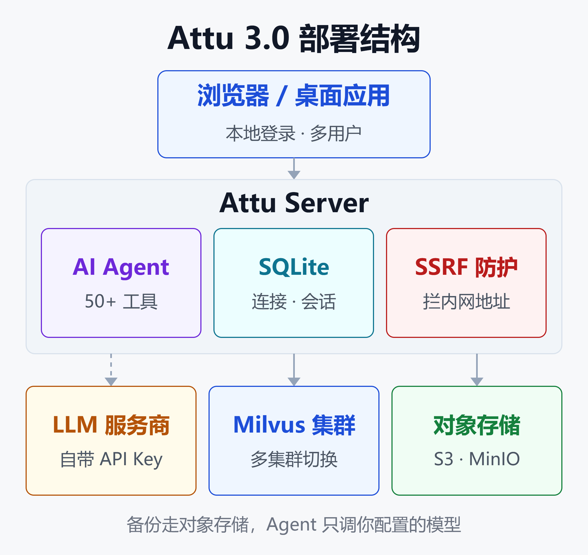

Attu 3.0 全解析：Milvus 管理台变身 AI 工作台，多集群、Agent、备份一站搞定
9 月 3 日，Zilliz 发布 Attu v3.0.0，9 月 24 日跟进 v3.0.1。这个 Milvus 官方管理台在 GitHub 上有 3.2k Star、2000 多次提交，是多数 Milvus 用户接触的第一个图形界面。
这一版不是小修小补。官方博客的说法是「完整重建」：从一次只能连一个实例的查看器，变成能管多集群、带 AI Agent、内置监控和备份的运维控制台。README 的副标题也改成了「Milvus 的 AI 工作台」。
与此同时，有两件事同样需要知道：Attu 从 v2.6.0 起已改为专有许可，不再开源；2.6.5 版本被安全公司披露了两个可组合利用的漏洞，厂商的处理方式是要求升级到 3.0。
本文按「能做什么 → 怎么部署 → 有哪些风险 → 要不要升级」的顺序梳理。
一、Attu 是什么
Attu 是 Milvus 向量数据库的图形化管理工具，由 Milvus 背后的公司 Zilliz 维护。它作为独立组件运行，连接到你指定的 Milvus 地址，本身不存储向量数据，也不改变 Milvus 的工作方式。
在 Milvus 生态里，它和另外两个工具分工不同：
- Birdwatcher：命令行诊断工具，偏底层排障。
- Milvus WebUI：Milvus 2.5 起内置的网页，侧重系统可观测性。
- Attu：面向开发者和运维的全功能控制台，覆盖建表、查数据、权限和备份。
3.0 支持 Zilliz Cloud、Milvus 2.6.0+ 和 3.x。Milvus 2.5 及更早版本不能用 3.0，需要用对应的老版本 Attu。
| Milvus 版本 | 对应 Attu 版本 |
|---|---|
| Zilliz Cloud | v3.0.x |
| 3.x / 2.6.x | v3.0.x |
| 2.5.x | v2.5.10 |
| 2.4.x | v2.4.12 |
| 2.3.x | v2.3.5 |
二、2.x 到 3.0：变了什么
官方博客给了一张 2.x 与 3.0 Beta 的对比表，核心差异集中在下面几项。
| 能力 | Attu 2.x | Attu 3.0 |
|---|---|---|
| 集群连接 | 仅单实例 | 多集群一键切换 |
| 状态保存 | 重启即丢失 | 本地数据库持久化 |
| AI 辅助 | 无 | 50+ 工具的 Agent |
| 监控 | 需外接 Grafana | 内置指标面板 |
| API 调试 | curl / Postman | 内置 Playground |
| 备份恢复 | 仅命令行 | 图形界面操作 |
简单说，2.x 是「打开看一眼」的工具，3.0 想做的是「日常就待在里面」的控制台。

上图是 3.0 的整体结构。浏览器或桌面端连到 Attu Server；Server 内部有 Agent、SQLite 状态库和出站请求防护；下游分别是你自带的 LLM 服务、多个 Milvus 集群，以及存放备份的对象存储。
三、多集群与持久化：最实用的两项改动
一个侧边栏管所有集群
2.x 切换集群要断开、重连、等待，管理开发、预发、生产三套环境时，往往要开三个浏览器标签。
3.0 把所有连接放进左侧边栏，每个连接旁有健康指示灯，绿色可达、红色不可用。切换一次点击，上下文保留。
每个集群有独立工作区，概览、数据浏览、用户管理、监控都只作用于当前选中的集群。这能降低「以为在预发、其实在生产」这类误操作的概率。
连接支持 TLS、单向和双向 mTLS、Token 以及用户名密码认证，保存前可以先测试连通性。
重启不再从零开始
2.x 是无状态的，容器一重启，保存的连接全部消失。3.0 引入了 SQLite 本地库，持久化以下内容：
- 集群连接配置
- Agent 对话历史与自定义技能
- LLM 配置与用户偏好
- 审计日志
Docker 镜像默认把库放在 /data/attu.db，部署时一定要挂载卷，否则持久化形同虚设。
四、内置 AI Agent：能执行操作的 Agent
这是 3.0 变化最大的部分。官方特意强调它不是文档问答机器人：Agent 接入了 50 多个 Milvus 工具，可以读集群状态，也可以执行真实操作。
能做哪些事
按官方示例，常见指令覆盖四类场景：
- 日常操作：列出所有集合；建一个含 768 维向量字段的集合；在某集合里搜最相似的 10 条。
- 运维诊断：集群健康吗；搜索为什么慢；哪些集合最占内存。
- 权限管理：建一个只读用户；查看某用户有哪些权限。
- 集群管理：查看版本与配置；对某集合执行 Compact。
四个内置诊断技能
除了自由对话，Agent 自带四套诊断流程，相当于把排障经验固化成步骤：
| 诊断技能 | 检查内容 |
|---|---|
| 集群健康 | 版本、节点、关键指标 |
| 搜索性能 | 索引、分段碎片、副本 |
| 数据写入 | 慢写入、丢数、Flush |
| 配置审计 | 高风险或错误配置 |
团队也可以用自然语言创建自定义技能，比如上线前检查清单、某个集合的数据质量巡检。保存后可以反复调用，不用每次重写提示词。
危险操作要确认
只读操作直接返回结果。删除集合、清空数据、修改权限这类操作会弹出确认框，列出具体参数，批准后才执行。
界面还会展示 Agent 调用了哪些工具、用了多少 token、哪次调用失败。对一个能改数据库的 Agent 来说，这种可追溯性是底线要求。
模型需要自带
Attu 不内置、也不代理任何 LLM 服务，需要自己配置模型供应商。支持 OpenAI、Anthropic、DeepSeek、Google Gemini、OpenRouter，以及任意 OpenAI 兼容接口。
API Key 加密保存在本地，不上传到 Zilliz 的服务。对需要控制数据流向的团队，可以接内网部署的兼容接口。
需要注意的是，Agent 调用模型时会把集合名、Schema、指标等上下文发给模型供应商。生产集群接外部模型前，建议先评估哪些元数据可以出网。
五、其他内置能力
3.0 把过去需要外挂的几类工具收进了控制台：
- 监控：内置 Prometheus 指标面板，16 项以上指标，加集群拓扑可视化。
- 备份恢复：全量和增量备份，支持 S3、MinIO、GCS、Azure Blob，可下载 ZIP 或上传归档恢复。服务包自带
milvus-backup。 - API Playground：按当前连接、数据库、集合限定作用域的 REST 调试环境。
- 数据浏览：数据库 → 集合 → 分区的树形导航，支持行内编辑和 CSV、JSON、Parquet 导入导出。
- 向量搜索：可配置 OpenAI、Cohere、Jina、VoyageAI 等 Embedding 服务，直接输文本搜。
- 治理类：RBAC、资源组、慢查询分析、配置查看、任务队列、审计日志，中英文界面。
跟着 Milvus 3.0 的新能力
v3.0.0 正式版的重点是适配 Milvus 3.0。以下功能需要后端是 Milvus 3.x：
- 外部集合：直接查询数据湖里的 Parquet、Iceberg 数据，不用先导入。在 Attu 中只读。
- 快照：浏览、恢复集合快照，跟踪恢复进度。
- TEXT 字段与在线 Schema 变更：增删字段、编辑描述、管理 Function 字段。
- 聚合分析：COUNT、SUM、AVG 等聚合，多字段分组排序，结果分页。
- MinHash 去重：配置 MinHash 字段和 MINHASH_LSH 索引，用原始文本找近似重复文档。
- 实体级 TTL、分区级加载释放、大文件分块导入。
TEXT 字段和外部集合还依赖 Storage V3。如果没开，需在 Milvus 配置里设置 common.storage.useLoonFFI=true 并重启。
关于混合检索与向量库选型的更多背景，可以参考 BM25 没有过时，反而在大规模 RAG 里赢了：原理、混合检索与最新规模研究 和 2026 开源向量库全景对比：Milvus、Qdrant、Weaviate、pgvector 到底怎么选。
六、部署：三种方式与几个坑
Docker（官方推荐）
docker run -d --name attu \
-p 3000:3000 \
-v attu-data:/data \
-e MILVUS_ADDRESS=milvus:19530 \
zilliz/attu:v3.0.1
启动后访问 http://localhost:3000。设置 MILVUS_ADDRESS 会在启动时自动创建一个默认连接，适合和 Milvus 一起编排。
和 Milvus 一起用 Compose
services:
attu:
image: zilliz/attu:v3.0.1
ports:
- "3000:3000"
environment:
- MILVUS_ADDRESS=milvus:19530
volumes:
- attu-data:/data
depends_on:
- milvus
# milvus 服务与 volumes 定义已省略
其他形态
- Kubernetes：仓库提供
deploy/attu-k8s-deploy.yaml，改好MILVUS_ADDRESS后kubectl apply。 - 独立服务包：Linux x64，需要 Node.js 24，默认监听
0.0.0.0:3080。 - 桌面版：macOS（Apple Silicon）、Linux、Windows，单用户模式，不支持多用户登录。
常见坑
- 连不上 Milvus：容器里的
localhost指向容器自己。要用 Compose 服务名、K8s 服务名或host.docker.internal。 - 绑定挂载权限：镜像以 uid 1000 的非 root 用户运行。用宿主目录挂载时，先
chown -R 1000:1000该目录；SELinux 主机加:Z。 - macOS 提示「已损坏」：执行
sudo xattr -rd com.apple.quarantine /Applications/Attu.app。 - 内网 Embedding 被拦：生产环境默认开启 SSRF 防护，见下一节。
七、安全：一个漏洞，和 3.0 的补法
2.6.5 的两个漏洞
安全公司 Bishop Fox 9 月 29 日公开了 Attu 2.6.5 的两个漏洞，编号 CVE-2026-105048（输入校验不当）和 CVE-2026-105049（缺失认证），后者评级为严重。
问题出在 Playground 功能。服务端只有在请求带了 milvus-client-id 头时才做鉴权，不带这个头，检查就被直接跳过。攻击者因此可以把 Attu 当作 HTTP 代理，再借输入校验缺陷访问内网地址。
在典型的 EKS 部署里，研究人员演示了两个漏洞组合后，可以拿到 Attu 所在 Kubernetes 命名空间的管理权限。
根据披露时间线，研究方 4 月发现问题，从 6 月起三次联系厂商。9 月 3 日厂商回复称 2.6.x 已停止维护，建议升级到 3.0.0。也就是说，2.6.x 不会有补丁。
3.0 的安全默认值
3.0 在服务端部署上补了几道防线：
- 默认本地登录：Docker 和服务包首次访问需创建管理员账号。
ATTU_AUTH_MODE=none可以关闭，但只应在已有其他访问控制层时使用。 - SSRF 防护：保存、测试、发送 Embedding 和 LLM 请求时都会校验目标地址。私有网段和回环地址需显式放行，域名按解析后的 IP 判断。
- 元数据地址硬封锁：
169.254.169.254、metadata.google.internal等即使加入白名单也会被拦，正好堵住上面漏洞的利用路径。 - 审计日志：记录所有写操作，含操作者、资源、结果和时间，敏感字段入库前脱敏，默认保留 90 天。
如果 Embedding 或 LLM 服务部署在内网，用 ATTU_SSRF_ALLOWLIST 放行具体主机：
-e ATTU_SSRF_ALLOWLIST=embed.corp.local,192.168.1.100
v3.0.1 的更新日志里有一条「默认允许私有服务端点」的修复，但 README 同时说明桌面端相关行为随版本变化。部署后建议实测一次内网服务能否连通，再决定是否配置白名单。
部署建议
- 不要把 Attu 直接暴露到公网，前面加 VPN、SSO 网关或至少 IP 白名单。
- 保持默认的本地登录，首个管理员密码不要用示例值。
- 生产集群给 Attu 单独建一个 Milvus 账号，按需授权，不要直接用 root。
- 开启 TLS 连接 Milvus；
MILVUS_TLS_SKIP_CERT_CHECK只用于本地测试。
关于 Agent 进入生产后的权限与审计问题，AI Agent治理与可观测性：企业落地的隐藏成本 有更系统的讨论。
八、许可证：已不再开源
这一点容易被忽略。仓库还在 GitHub 上，名字也没变，但许可证已经换了：
- v2.5.12 及之前：Apache 2.0，可以自由使用、修改、分发。
- v2.6.0 起：Zilliz 专有许可，只能使用官方二进制和镜像，可以提 Issue。
专有许可明确禁止查看、修改、复制、再分发 2.6.0 以上版本的源码，也禁止反编译或制作衍生作品。
对大多数用户，这不影响日常使用，免费拉镜像照常可用。但以下几类团队要提前评估：
- 需要二次开发或嵌入自家平台的。
- 内部合规要求运维工具必须开源可审计的。
- 有信创或源码托管要求的。
这些场景下，可选的路线是停留在 Apache 2.0 的 v2.5.12 自行维护（但只兼容到 Milvus 2.5），或改用 Milvus WebUI 加 Birdwatcher 的组合。
九、要不要升级
按现状，可以这样判断：
| 你的情况 | 建议 |
|---|---|
| 在用 Attu 2.6.x | 尽快升级 3.0.x |
| Milvus 2.6 / 3.x | 直接用 3.0.x |
| Milvus 2.5 及以下 | 先升 Milvus 再说 |
| 需要源码可审计 | 评估 v2.5.12 |
2.6.x 是最需要动作的一组：已停止维护，又有公开的严重漏洞，继续运行在可被访问的网络里风险很高。
还停在 Milvus 2.5 的团队，Attu 3.0 用不了。考虑到 3.0 带来的多集群、Agent 和备份能力，这本身也是推动 Milvus 升级的一个理由。
小结
Attu 3.0 的价值可以归纳为三点：
- 多集群加持久化解决了 2.x 最大的日常痛点，管多套环境不再靠开多个标签页。
- 内置 Agent 和诊断技能把常见运维问题变成对话，危险操作有确认、调用有记录，模型和 Key 都掌握在自己手里。
- 监控、备份、API 调试、审计收进同一个控制台，少维护几套外挂工具。
代价也很清楚：它已经是闭源产品；2.6.x 的漏洞说明管理台本身就是攻击面，必须按生产组件对待。
建议的做法是：先在测试环境用 Docker 跑起来，接一个内网模型试用 Agent 和诊断技能；确认登录、TLS 和 SSRF 配置后，再接入生产集群。
免责声明
本文基于 Attu 官方仓库、发布说明、官方博客和公开安全报告整理，功能描述以官方文档为准，版本信息截至 2026 年 10 月。安全建议仅供参考，请结合自身环境评估，不构成任何商业或合规建议。
参考来源
- GitHub —— zilliztech/attu 仓库 README
- GitHub —— Attu Releases（v3.0.0 / v3.0.1 发布说明）
- GitHub —— Attu 专有许可证 LICENSE_PROPRIETARY
- Milvus Blog —— Attu 3.0 Beta: Multi-Cluster Management, AI Agent, and a Rebuilt Milvus Console
- Bishop Fox —— Zilliz / Attu 2.6.5 漏洞披露
- Zilliz Blog —— Milvus WebUI: Visualize & Optimize Your Vector Database
- Milvus 文档 —— Quick Start with Attu
- 阿里云帮助中心 —— 向量检索服务 Milvus 版 Attu 使用指南